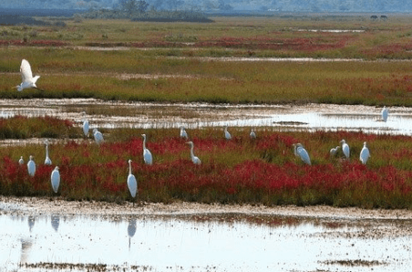
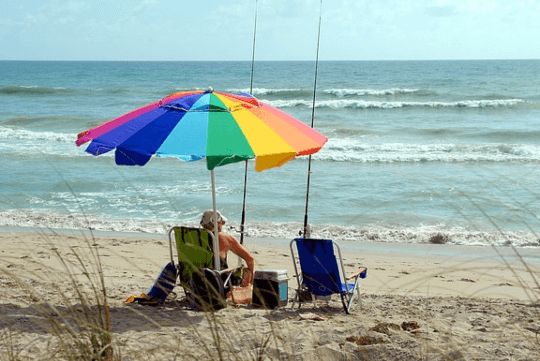
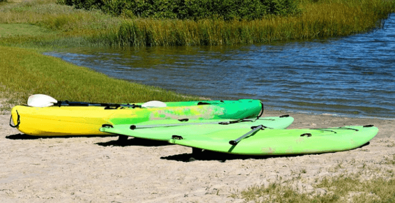
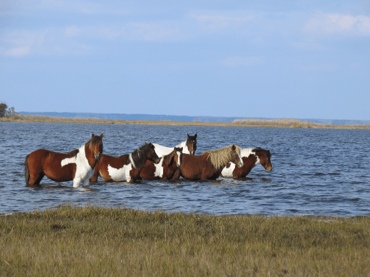

What to Do
Assateague Island is a great place to explore the beautiful coastal wildlife, sandy beaches, salt marshes, and maritime forests. Visitors have several activities to choose such as birdwatching, dolphin watching, fishing, kayaking, watching the pony swim, bicycling, swimming, and beachcombing.
Birdwatching
{kind=link}
Assateague Island is home to over 300 species of migratory and resident birds including bald eagles. Visitors can go birdwatching year-round on their own by vehicle or take a kayak or guided boat tour for an incredible wildlife experience.
Fishing
{kind=link}
Assateague Island is home to one of the best places for inshore and surf fishing. Popular fish include the Black Drum, Bluefish, Croaker, Flounder, Sea Trout, Speckled Trout, and Striped Bass.
Kayaking
{kind=link}
Assateague Island offers an incredible kayaking experience at Assateague Island National Seashore. Visitors will see wildlife such as herds of wild ponies and bald eagles, lighthouses, and pristine waterways. Assateague Explorer offers kayaking tours that include kayaks, paddles, PFDs, kayaking instructions, and tour guides.
Pony Swim
{kind=link}
The Pony Swim takes place on the last Wednesday and Thursday of July annually in Chincoteague, Virginia. The local fire department rounds up the wild poinies, which swim across the Assateague channel. Around 40,000 visitors come see the pony swim that dates back to 1925. Marguerite Henry's classic book Misty of Chincoteague Island has captured the interest of horse lovers across the world to come see this pony swim every year.